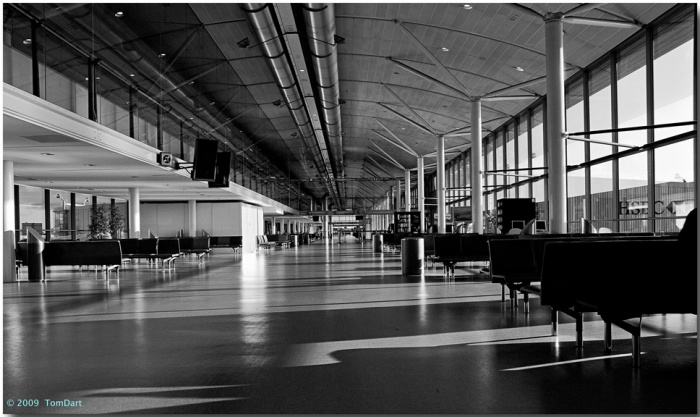

Linington Nature Reserve
You are currently on the homepage.
Introduction
Linington Nature Reserve is a local nature park located on the edge of Stourville, cultivated to encourage and sustain a diversity of wildlife. Our reserve is regularly used by both local schools and birdwatchers, and can accomodate both casual walkers and more dedicated wildlife researchers.
The Reserve offers an exciting environmental display and an excellent schools service, including an onsite laboratory from which binoculars and microscopes can be used by pupils. See the school trips section for more details.
We also offer special workshops on topics such as "Making a Wildlife Garden" and "Digital Wildlife Photography", for which a charge is made. Booking is essential - places are limited!
We hope you enjoy your time at Linington.